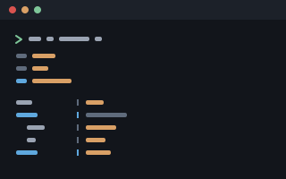
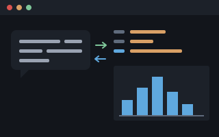

Shoddy Documentation
Complete programs, one page per mill
The machines are the library. The
mills are the finished cloth: complete, working programs woven from those
machines, each in its own folder under mills/ in the repo.
Every mill is meant to be read as much as run. Each one is real Shoddy at
program scale, and shows how a purely functional BASIC — a BASIC where a
routine's answer depends only on its inputs — handles a game loop, a neural
network, or a command-line tool. Each page covers one mill: what it is,
where it came from, how to run it, and how it's built.
The mills share one architecture, and it is worth knowing before you read any of them. Each program splits into two parts:
Every mill folder carries its own build.sh wrapper, with a
build.ps1 twin for Windows. If bin/ is missing,
each wrapper builds the mill toolchain itself first.
| Mill | What it is | ||
|---|---|---|---|
 | invaders | An Invaders-style game in a scribbler window. Arrows move and Space fires. The buzzer's sound effects are inferred by diffing the pure model's state — comparing one frame's state with the next. | Ready |
 | mungo-caverns | The cave crawl every text adventure came from, purely functional. It has 185 rooms and a two-word parser. The whole cave database is written as Shoddy records, and the rules return what they say instead of printing it. Graded against the C original's recorded transcripts. | Ready |
 | oregon | An overland-trail game (1971) at the console. It is a port of the MECC classic, made from the original BASIC listing kept in the folder, with the timed BANG/BLAM/POW/WHAM marksmanship intact. | Ready |
 | pac-vt100 | Pac in the terminal. Dots, cherries, and edible ghosts are drawn with VT100 escapes — the special character codes a terminal reads as cursor moves and colors. Keys are read through InKey without waiting (non-blocking). Wants an ANSI terminal at least 80×26. | Ready |
| Mill | What it is | ||
|---|---|---|---|
 | devils-dust | Wool in the air of a shoddy mill: a hundred wisps flocking by the three boids rules above the devil's drum. It has a live tuning console — 21 sliders, a speed lever that goes to eleven, heat-coloured gauges — and a machine-room drone that rises and falls with the drum. | Ready |
 | emley-moor | An HTTP server — the kind of program that answers a web browser — written in Shoddy. The routing is one pure function: request text in, response text out. So every route is graded by calling it, with no socket and no network. The listener is twenty lines beside it. | Ready |
| weather-glass | A 72-hour VT100 forecast for any US ZIP, off the National Weather Service. The shell makes four HTTPS hops — secure web requests. Everything else — parsing, the NOAA solar algorithm, the whole 58-column layout — is pure and graded offline against captured responses. | Ready |
This is the language's origin story, animated — and the interactive one.
Every constant of the simulation is a slider. The presets are lever
positions the machine winds to with iron inertia, and the sound is another
gauge. This is also the mill whose sound experiments grew the buzzer's
SoundWave builtin.
| Mill | What it is | ||
|---|---|---|---|
 | halifax | A programmable RPN calculator at a prompt. RPN (reverse Polish notation) means you enter the numbers first and the operation after. It has unlimited UNDO and REDO, words you define and save as readable text, exact money, an adding-machine tape, and a TRACE mode that shows the stack after every token. Every one of those is a property of the language rather than a feature of the mill. | Ready |
 | sparky | The same calculator handed to a language model as a local MCP server — MCP is the standard way an assistant launches a tool and talks to it. Thirty-four seeds of the standard library become callable tools. Every word carries its own stack effect and description, so nothing has to be guessed, and charts come back as pictures. The first mill whose user is a model rather than a person. | Ready |
 | tally | Statistics and charts from a spec file — a CSV (a plain-text table) in, a report and a PNG out. The derive, filter and report stages name verbs rather than parse expressions. That is what keeps a configurable tool from growing its own little language. | Ready |
The spec file is tally's whole interface: which data, which columns, what to compute, what to draw, and where to put the window. Nothing is passed on the command line but the spec's own name.
halifax is the opposite arrangement — nothing is passed at all, and the interface is a prompt. It is the first mill built on reckoner, so it is also the working answer to what the runtime stack is for.
| Mill | What it is | ||
|---|---|---|---|
 | demographics | Neural income prediction — the same machine wearing its other head. It trains an 8-100-1 tanh regression, saves it bit-exactly (serialized), then predicts interactively from the trained model. | Ready |
 | iris | Neural species classification. A 4-8-3 tanh/softmax net over Fisher's iris data trains with momentum in about four seconds. It reports a confusion matrix — a table of right and wrong guesses — and a probability per species. | Ready |
The pair is worth reading together. iris predicts a category, is scored on how often it is right, and says how sure it was. demographics predicts a number and is scored on how close it gets. Same machine, same train-once/predict-many split, different head. Iris trains in about four seconds and demographics in about nine minutes, so iris is the one to reach for first.
| Mill | What it is | ||
|---|---|---|---|
 | simplex-from-mps | A command-line LP solver — LP (linear programming) finds the best answer under a set of limits. It reads an MPS file (a standard text format for these problems), optimizes with the simplex machine, and reports objective, variables, shadow prices, and reduced costs. | Ready |